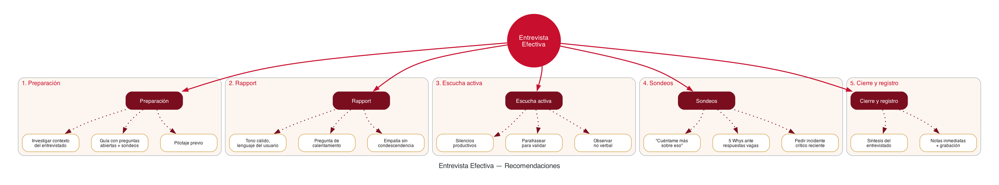
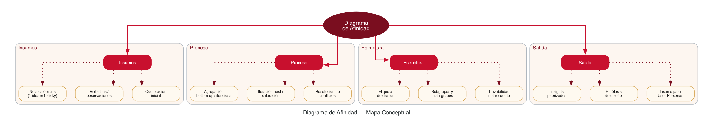
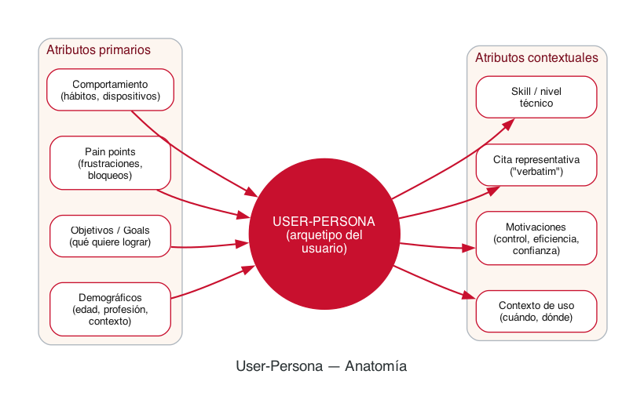

Universidad del Valle
Facultad de Ingeniería
Escuela de Ingeniería de Sistemas y Computación
Actividad 7 · Fundamentos IHC
Taller
Investigación
de Usuarios
Resolución de cognotécnicas aplicadas al proyecto Agentic Loop UI — Interfaz determinista para asistentes conversacionales de banca digital colombiana.
Entrega Mayo 2026
Raúl Andrés Alzate
Maestría en Computación para el Desarrollo de Aplicaciones Inteligentes (CODING)
Fundamentos de Interacción Humano–Computador
Tabla de Contenidos
- 0.Contexto del Proyecto3
- 1.Pasos para realizar la Entrevista de Usuarios4
- 2.Recomendaciones para entrevistas de usuarios5
- 3.Aspectos a evitar al realizar entrevistas6
- 4.Elementos clave del Diagrama de Afinidad7
- 5.Herramientas para Diagramas de Afinidad8
- 6.Aspectos clave para definir User-Personas9
- 7.Herramientas para crear User-Personas10
- 8.Conclusiones y aplicación al proyecto11
0. Contexto del Proyecto
Proyecto base — Agentic Loop UI · Banca digital colombiana
Diseño de una interfaz determinista para un asistente conversacional de banca digital colombiana, delimitado al flujo de cancelación de tarjeta de crédito. El objetivo es eliminar las alucinaciones de completitud de los LLMs, sustituyendo la prosa probabilística por señales técnicas verificables de la API (stop_reason, códigos HTTP, ToolResult). El stack declarado es Claude API + tool use + orquestador propio, evaluado mediante test A/B (Control vs Prototipo) bajo el marco regulatorio de Habeas Data (Ley 1581) y Circular SFC 029. La investigación de usuarios valida que la solución reduce realmente la carga cognitiva y mejora la auditabilidad, focalizada en una persona primaria — auditor de Customer Service, con dos personas secundarias para validación de inclusión: usuarios con diversidad cognitiva y adultos mayores con brecha digital.
Cognotécnicas seleccionadas para cada punto
| # | Pregunta | Cognotécnica | Razón de elección |
|---|
| 1 | Pasos de la entrevista | Línea de tiempo | Refleja la secuencia temporal del proceso |
| 2 | Recomendaciones | Mapa mental | Agrupa heurísticas radiales por dimensión |
| 3 | Aspectos a evitar | Cuadro sinóptico (Sí/No) | Contraste visual rápido entre prácticas |
| 4 | Elementos del Diag. Afinidad | Mapa conceptual | Relaciona conceptos jerárquicos |
| 5 | Herramientas para Afinidad | Cuadro comparativo | Pros/contras lado a lado |
| 6 | Aspectos User-Personas | Diagrama esquemático | Anatomía visual de una persona |
| 7 | Herramientas User-Personas | Cuadro comparativo | Pros/contras lado a lado |
1. Pasos para realizar la Entrevista de Usuarios
Cognotécnica: Línea de tiempo. Cada paso se ilustra con su aplicación al proyecto Agentic Loop.
01
Definir el objetivo de investigación
Hipótesis y preguntas de investigación. Aplicado: ¿Reduce el Event Log el tiempo de auditoría y aumenta la tasa de detección de fallos en cancelación de tarjeta vs chatbot bancario tradicional?
02
Reclutamiento y muestreo
Definir perfil del participante y criterios de inclusión/exclusión. Aplicado: 6 auditores CS de banca digital (persona primaria) + 4 secundarios (TDAH, adultos mayores) para inclusión.
03
Diseñar la guía de entrevista
Preguntas abiertas, embudos de detalle, escenarios. Aplicado: guion sobre incidentes reales de auditoría tras cancelación/modificación fallida en chatbot bancario.
04
Pilotaje
Probar la guía con 1–2 personas. Aplicado: ajustar terminología técnica (max_tokens, ToolResult) según familiaridad del auditor con APIs.
05
Logística y consentimiento informado
Plataforma, duración (45–60 min), grabación, ética. Aplicado: consentimiento bajo Ley 1581 (Habeas Data); datos bancarios siempre sintéticos en escenarios.
06
Conducción de la entrevista
Rapport, escucha activa, sondeos. Aplicado: mostrar mock-up del Agentic Loop con flujo de cancelación de tarjeta para reacción contextual.
07
Registro y notas de campo
Notas literales + observación no verbal. Aplicado: registrar momentos en que el auditor abre consolas paralelas o relee la transcripción como señal de desconfianza.
08
Transcripción
Verbatim o focused. Aplicado: transcripción focalizada en pasajes sobre trazabilidad, auditoría y verificación cruzada con el core bancario.
09
Análisis temático
Codificación abierta y axial. Insumo del Diagrama de Afinidad. Aplicado: tags como falso_positivo_cancelacion, consola_paralela, riesgo_normativo.
10
Síntesis e insights
Construcción de hallazgos accionables → user-personas y journey maps.
11
Reporte y devolución
Comunicación al equipo de diseño. Aplicado: recomendaciones priorizadas para iteración del prototipo.
2. Recomendaciones para entrevistas de usuarios
Cognotécnica: Mapa mental con cinco dimensiones radiales.

Figura 1 — Mapa mental de recomendaciones para entrevistas de usuarios.
Aplicación al proyecto Agentic Loop
Para la persona primaria (auditor de Customer Service en banca digital), se prioriza lenguaje técnico-normativo (Habeas Data, Circular SFC 029, trazabilidad, ToolResult) y se pide narrativa de un caso real reciente de cancelación o reversión auditada. Para las personas secundarias de inclusión: con TDAH se priorizan sesiones cortas (≤30 min) y apoyos visuales; con adultos mayores el rapport debe extenderse y la escucha activa requiere más silencios productivos para evitar respuestas socialmente deseables sobre productos financieros.
3. Aspectos a evitar al realizar entrevistas con usuarios
Cognotécnica: Cuadro sinóptico contrastivo (Hacer / No hacer).
✓ Sí — Buenas prácticas
- Preguntas abiertas: "¿cómo fue esa experiencia?"
- Hablar < 30% del tiempo total
- Validar sin juzgar
- Profundizar con sondeos neutros
- Revelar el prototipo solo cuando proceda
✗ No — Anti-patrones
- Preguntas dirigidas: "¿no crees que X es mejor?"
- Monologar o narrar el producto
- Mostrar decepción/sorpresa por respuestas
- Encadenar varias preguntas en una
- Mostrar el prototipo antes de captar pain points
Sesgos críticos a controlar
| Sesgo | Manifestación | Mitigación |
|---|
| Confirmación | Buscar respuestas que validan la hipótesis del Agentic Loop | Preguntar primero por el dolor, no por la solución |
| Deseabilidad social | El usuario dice que confía en la IA porque es lo "esperado" | Pedir incidente concreto, no opinión genérica |
| Anclaje | Mencionar "alucinación" condiciona al participante | Vocabulario neutro: "respuesta inesperada" |
| Líder de la entrevista | Sugerir respuesta en la pregunta | Preguntar "¿qué pasó después?" en vez de "¿el bot ejecutó la cancelación?" |
| Halo experto / cumplimiento | Auditores responden lo que "compliance esperaría" | Pedir relato de un caso real reciente de auditoría post-incidente bancario |
Errores frecuentes específicos en este proyecto
- Mostrar UI antes de tiempo: revelar el Event Log al inicio sesga la valoración del flujo actual de auditoría manual.
- Lenguaje técnico opaco fuera del rol: hablar de
stop_reason con un adulto mayor invalida la respuesta; con auditores el término sí aplica si manejan APIs.
- Ignorar la experiencia de fallo previa: sin un incidente bancario real referenciable (caso de cancelación fallida), las respuestas son hipotéticas.
- Pedir datos reales del banco: riesgo de violación de Habeas Data; usar siempre datos sintéticos en escenarios.
- No verificar comprensión: con usuarios neurodivergentes, asumir que "sí" significa entender.
4. Elementos clave del Diagrama de Afinidad
Cognotécnica: Mapa conceptual (jerárquico-relacional).

Figura 2 — Mapa conceptual de los elementos del Diagrama de Afinidad.
Síntesis de elementos clave
- Notas atómicas: cada sticky representa una observación única, en lenguaje del usuario.
- Construcción bottom-up: el patrón emerge desde los datos, no desde categorías predefinidas.
- Etiquetas (labels): nombres que sintetizan cada cluster con verbo + sustantivo.
- Trazabilidad: cada nota mantiene referencia a su entrevista origen para auditar el insight.
- Iteración: los grupos se reorganizan hasta lograr saturación temática.
- Salida accionable: insights y hipótesis priorizadas que alimentan personas y journey maps.
5. Herramientas para Diagramas de Afinidad
Cognotécnica: Cuadro comparativo con ventajas y desventajas.
5.1 Miro
Pizarra colaborativa cloud-native con plantillas específicas para affinity diagrams, votación, timer y export a PDF/CSV.
Ventajas
- Colaboración multi-cursor en tiempo real
- Plantillas listas (Affinity, Empathy, Personas)
- Votación por puntos para priorizar clusters
- Integraciones con Jira, Notion, Slack
- Versión gratuita razonable (3 boards)
Desventajas
- Costo creciente con el equipo (~$8/usuario/mes)
- Performance baja con >500 stickies
- Requiere conexión estable
- Curva de aprendizaje para los atajos
- Datos en cloud terceros: cuidado con datos sensibles
5.2 FigJam (Figma)
Pizarra integrada al ecosistema Figma, ideal cuando el diseño UI vive en la misma plataforma.
Ventajas
- Integración nativa con Figma (handoff fluido)
- UX moderno y rápido
- Plantillas comunitarias gratuitas
- Plan free generoso para estudiantes
- Sticky notes con voting y stamping
Desventajas
- Funciones de moderación menos maduras que Miro
- Menos integraciones empresariales
- Sin soporte robusto offline
- Limitaciones con archivos muy grandes
5.3 Mural
Plataforma orientada a facilitación empresarial; foco en talleres asíncronos.
Ventajas
- "Facilitator superpowers" (timer, follow, lock)
- Enterprise-grade SOC2 / privacidad
- Plantillas avanzadas para Design Thinking
- Modo presentación guiada
Desventajas
- Más caro y orientado a empresa
- UX menos moderna que FigJam/Miro
- Curva de adopción mayor
Tabla comparativa
| Criterio | Miro | FigJam | Mural |
|---|
| Colaboración real-time | ★★★★★ | ★★★★★ | ★★★★☆ |
| Plantillas para investigación | ★★★★★ | ★★★★☆ | ★★★★★ |
| Coste para equipo pequeño | ★★★☆☆ | ★★★★★ | ★★☆☆☆ |
| Integración con flujo UI | ★★★☆☆ | ★★★★★ | ★★★☆☆ |
| Privacidad / datos sensibles | ★★★☆☆ | ★★★☆☆ | ★★★★★ |
Elección para el proyecto: FigJam por la integración directa con el prototipo Figma del Agentic Loop y el coste para entornos académicos.
6. Aspectos clave para definir User-Personas
Cognotécnica: Diagrama esquemático (anatomía de una persona).

Figura 3 — Anatomía esquemática de una user-persona.
Aplicación al proyecto: una persona primaria + dos secundarias de inclusión
PRIMARIA — Auditor de Customer Service · banca digital
Carlos — Auditor CS, 41 años · Bogotá
"Necesito demostrar a compliance qué hizo el agente, no qué dice que hizo. Hoy abro 3 consolas para reconstruir cada caso."
Goal: verificar trazabilidad normativa de cancelaciones/reversiones del chatbot bancario sin abrir consolas paralelas. Pain: chatbots opacos que afirman completar operaciones sin evidencia técnica auditable. Motivación: evidencia técnica observable (Event Log), no narrativa probabilística. Marco normativo: Habeas Data (Ley 1581) + Circular SFC 029. Métrica de éxito: reducción de tiempo de auditoría por caso.
Secundaria — Diversidad cognitiva (validación de inclusión)
Ana — Profesional con TDAH, 32 años
"Si la IA me dice que ya está hecho pero no estoy segura, entro en bucle y termino haciéndolo yo a mano."
Goal: ejecutar trámites bancarios sin re-verificar manualmente. Pain: texto extenso y ambiguo dispara su sobrecarga cognitiva. Motivación: reducir carga cognitiva extrínseca. Valida que: Stepper + Event Log son legibles para usuarios neurodivergentes.
Secundaria — Brecha digital (validación de inclusión)
Doña Elsa — Pensionada, 68 años
"Cuando la pantalla me dice cosas raras, mejor llamo a mi hija."
Goal: hacer el trámite (cancelar tarjeta) sin asistencia familiar. Pain: indefensión aprendida frente a sistemas impredecibles. Motivación: control y dignidad. Valida que: manejo determinista de errores no induce indefensión aprendida.
7. Herramientas para crear User-Personas
Cognotécnica: Cuadro comparativo con ventajas y desventajas.
7.1 Xtensio — User Persona Creator
Plataforma especializada en plantillas editoriales para personas, lean canvas y one-pagers.
Ventajas
- Plantillas profesionales listas para presentación
- Export a PDF / PNG con identidad cuidada
- Plan free incluye persona básica
- Bibliotecas de iconos / avatares incluidas
Desventajas
- Funciones avanzadas requieren plan pago (~$15/mes)
- Personalización de layout limitada
- Sin colaboración multi-cursor potente
- Datos almacenados en cloud terceros
7.2 UXPressia
Suite completa para UX research: personas, journey maps, impact maps con vinculación entre artefactos.
Ventajas
- Persona ↔ Journey map vinculados
- Export profesional + modo presentación
- Plantillas demográficas precargadas
- Modo público y privado para portafolio
Desventajas
- Plan gratuito muy limitado (1 persona)
- Coste alto en planes superiores ($24+/mes)
- Curva de aprendizaje en módulos avanzados
- UI menos pulida que Figma/FigJam
7.3 Figma + plantilla comunitaria
Construir personas en Figma con plantillas comunitarias (e.g., "User Persona Template" de Romina Kavcic).
Ventajas
- Total flexibilidad de diseño
- Mismo entorno que el prototipo UI
- Gratuito para equipos pequeños
- Trazabilidad: persona ↔ wireframe en mismo archivo
- Versionado y comentarios integrados
Desventajas
- Requiere skills de diseño / Figma
- Sin estructura de campos forzada (riesgo de inconsistencia)
- Sin vinculación nativa con journey maps
- Plantillas externas pueden quedar obsoletas
Tabla comparativa
| Criterio | Xtensio | UXPressia | Figma + plantilla |
|---|
| Velocidad de creación | ★★★★★ | ★★★★☆ | ★★★☆☆ |
| Calidad visual export | ★★★★☆ | ★★★★★ | ★★★★★ |
| Flexibilidad / personalización | ★★☆☆☆ | ★★★☆☆ | ★★★★★ |
| Vinculación con otros artefactos | ★★☆☆☆ | ★★★★★ | ★★★★☆ |
| Coste | ★★★☆☆ | ★★☆☆☆ | ★★★★★ |
| Apto para equipos académicos | ★★★☆☆ | ★★★☆☆ | ★★★★★ |
Elección para el proyecto: Figma + plantilla comunitaria, manteniendo a Carlos (persona primaria) en el mismo archivo donde vive el prototipo del flujo de cancelación de tarjeta. Esto preserva trazabilidad nota verbatim → cluster (FigJam) → persona Carlos → wireframe del Stepper/UI Cards/Event Log → versión del A/B test.
8. Conclusiones y aplicación al proyecto
La investigación de usuarios no es un complemento sino el fundamento de validación del proyecto Agentic Loop aplicado al dominio de banca digital colombiana. La hipótesis central — que una interfaz determinista reduce el tiempo de auditoría y aumenta la tasa de detección de fallos en operaciones financieras frente a un chatbot probabilístico — solo puede demostrarse mediante evidencia cualitativa rigurosa que se traduzca en métricas cuantitativas (Tasa de Éxito de la Tarea, Time-on-task, SUS, Índice de Confianza Post-Interacción Likert 1–7 con n≥10).
Cadena de artefactos prevista
- Entrevistas a 6 auditores CS (primaria) + 4 secundarios (TDAH + adultos mayores) = 10 participantes.
- Diagrama de Afinidad en FigJam para clusters de hallazgos sobre auditoría manual actual.
- User-Personas en Figma — Carlos como primaria, Ana y Doña Elsa como validación de inclusión.
- Heurísticas de Nielsen revisadas a la luz de los pain points reales (foco en Sad Paths).
- Test A/B moderado con escenario de estrés: cancelación de tarjeta XX1234 con timeout 503 inducido y prompt configurado para que la IA mienta.
Decisiones de diseño justificadas por la investigación
- Event Log estructurado: validado por la necesidad normativa de Carlos (Habeas Data, SFC 029) — decisión rectora del proyecto.
- UI Cards de herramientas: validado por la necesidad de auditar inputs/outputs del
cancel_product() sin abrir consolas paralelas.
- Visibilidad de iteraciones (steppers): validada secundariamente por Ana (carga cognitiva) y por Carlos (anticipación del flujo agéntico).
- Manejo determinista de errores: validado por la indefensión aprendida de Doña Elsa frente a sistemas que mienten.
Riesgos metodológicos identificados
- Sesgo de confirmación del investigador: mitigado con protocolo neutral, vocabulario sin anclajes ("respuesta inesperada" en vez de "alucinación") y triangulación con segundo evaluador.
- Reclutamiento de auditores reales del sector financiero: sin contactos directos, riesgo de muestra sesgada hacia perfiles análogos (estudiantes con experiencia similar).
- Sensibilidad de datos bancarios (Ley 1581): el prototipo debe usar datos sintéticos exclusivamente; consentimiento informado robusto y eliminación post-estudio.
- Tiempo limitado del curso: no hay margen para más de un ciclo de testing; priorizar saturación temática sobre cobertura.
Entrega: documento elaborado para la Actividad 7 — Taller Investigación de Usuarios, asignatura Fundamentos IHC, Maestría en Computación para el Desarrollo de Aplicaciones Inteligentes (CODING), Universidad del Valle. Las cognotécnicas se construyeron específicamente como insumos accionables del proyecto de curso "Agentic Loop UI" delimitado al dominio de banca digital colombiana — flujo de cancelación de tarjeta de crédito con marco regulatorio Ley 1581 + Circular SFC 029.